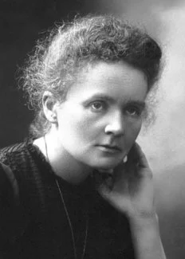
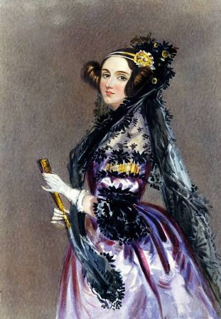
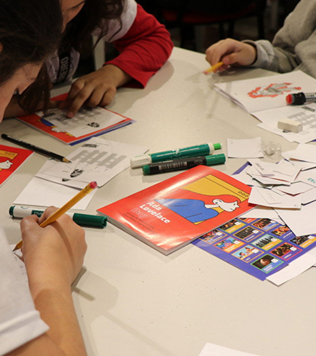
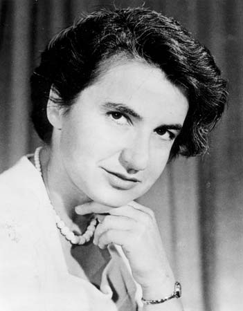
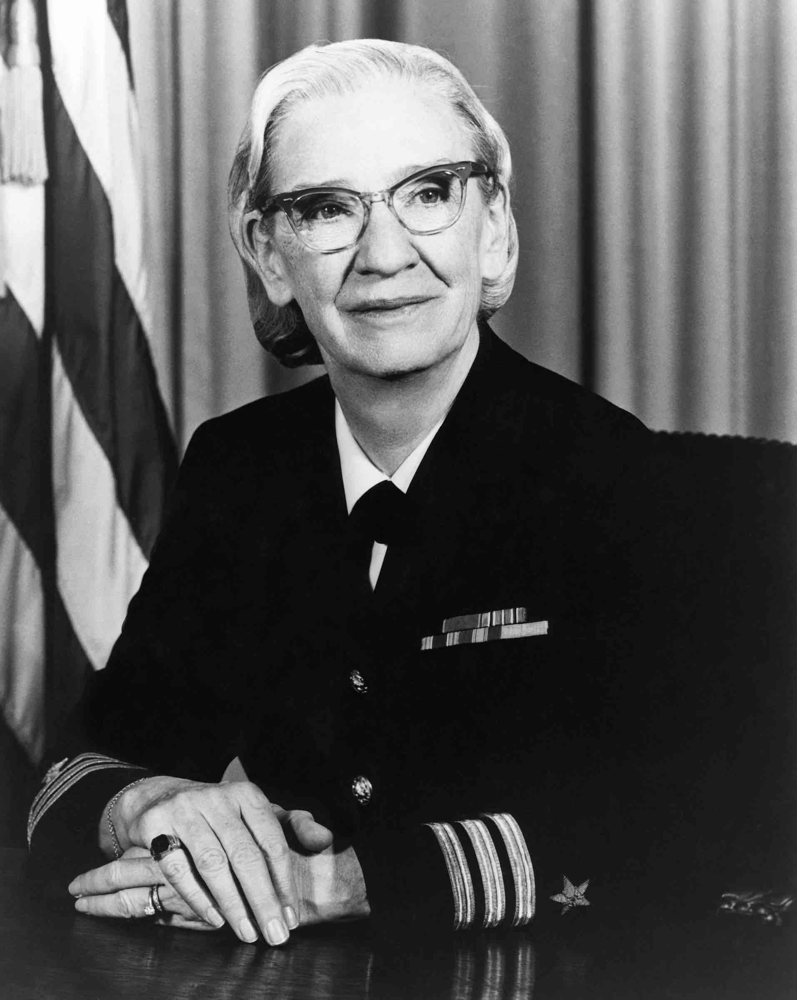
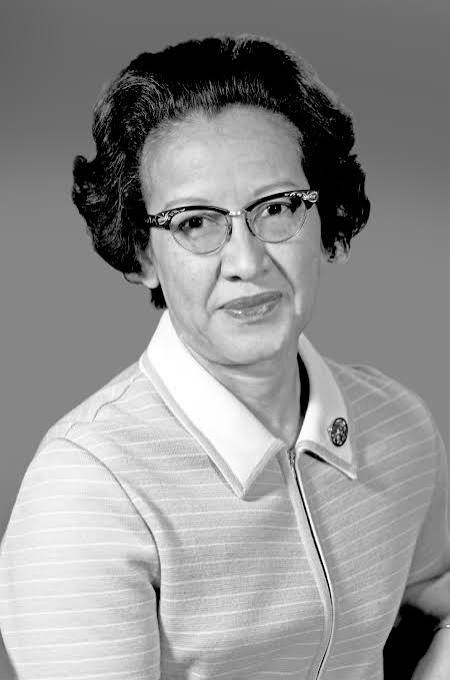

Marie Curie
Foi pioneira no estudo da radioatividade e descobriu os elementos polônio e rádio, tornando-se a primeira pessoa a receber dois Prêmios Nobel em áreas científicas diferentes.
Ciência, tecnologia, engenharia e matemática também são lugares de mulheres, e sempre foram.
Ada Lovelace (1815–1852) foi uma matemática britânica nascida em Londres em 1815, conhecida por seu trabalho na máquina analítica de Charles Babbage. Nesses escritos, ela descreveu um passo a passo detalhado para calcular os números de Bernoulli na máquina, criando o primeiro algoritmo para ser processado em uma máquina.
Ela é considerada a primeira programadora da história. Desde 2009, o Ada Lovelace Day é celebrado todos os anos para dar visibilidade às conquistas de mulheres nas carreiras de ciência e tecnologia.

Embora as mulheres tenham contribuído para importantes avanços científicos e tecnológicos, muitas delas não receberam a visibilidade e o reconhecimento que seriam justos por suas contribuições. Isso acaba refletindo na pouca representatividade feminina nas áreas de STEM.
Por isso, é importante que haja representatividade feminina nesses locais. Ao conhecer e ter contato com mulheres que atuam na ciência e na tecnologia, essas meninas podem encontrar referências que mostrem que esses espaços também lhes pertencem.
A presença de mulheres na STEM é essencial para uma ciência mais diversa!

Mulheres para se inspirar!

Foi pioneira no estudo da radioatividade e descobriu os elementos polônio e rádio, tornando-se a primeira pessoa a receber dois Prêmios Nobel em áreas científicas diferentes.

Química e biofísica, seus estudos com difração de raios X foram fundamentais para revelar a estrutura do DNA.

Cientista da computação americana e contra-almirante da Marinha dos EUA, inventou a primeira linguagem de programação a usar palavras em inglês. Ela é considerada uma das principais inventoras da linguagem COBOL

Matemática, seus cálculos foram fundamentais para as trajetórias das missões espaciais da NASA, incluindo a missão que levou John Glenn a orbitar a Terra.
Inscreva sua menina na sede da Unifesp.